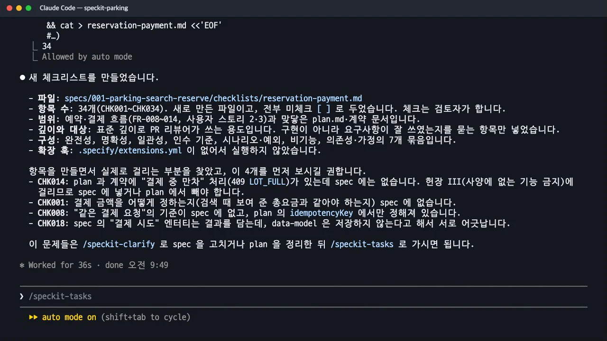

/speckit-checklist는 코드가 아니라 요구사항 문장을 시험합니다. Spec Kit은 이것을 「영어로 쓴 글을 위한 단위 시험」이라고 부릅니다. 예약·결제 흐름에 대해 34개 항목을 만들게 했더니, 사양과 계획이 어긋난 곳 네 군데가 실제로 드러났습니다. 그 네 곳을 명확화로 사양에 반영하는 과정까지 봅니다.
무엇을 · 왜#
명세 단계의 품질 점검표(requirements.md)는 글의 모양을 봅니다. 구현 세부가 섞이지 않았는지, 성공 기준을 측정할 수 있는지 같은 것입니다. /speckit-checklist는 한 주제를 정해 그 주제의 요구사항이 충분하고 분명하고 서로 맞는지를 묻습니다.
스킬은 "체크리스트는 요구사항 작성을 위한 단위 시험이지, 구현을 확인하는 시험이 아니다"라고 명시합니다. 이 실습에 적용하면 이렇습니다.
| 이렇게 묻는다 (요구사항 시험) | 이렇게 묻지 않는다 (구현 시험) |
|---|---|
| "결제 금액이 어떻게 정해지는지 요구사항에 적혀 있는가?" | "결제 금액이 맞게 계산되는가?" |
| "'빠른 응답'이 구체적인 시간으로 정해져 있는가?" | "응답이 빠른가?" |
| "모든 버튼의 눌림 상태 요구가 서로 같은가?" | "버튼이 잘 눌리는가?" |
항목마다 품질 차원을 대괄호로 붙입니다.
| 차원 | 묻는 것 |
|---|---|
| Completeness (완전성) | 필요한 요구사항이 다 있는가 |
| Clarity (명확성) | 구체적이고 한 가지로만 읽히는가 |
| Consistency (일관성) | 요구사항끼리, 사양과 계획이 서로 맞는가 |
| Measurability (측정 가능성) | 객관적으로 확인할 수 있는가 |
| Coverage (범위) | 모든 흐름과 예외, 경계 상황을 다뤘는가 |
이 점검은 계획(plan.md)이 있어야 실행됩니다. 사양과 계획, 계약을 함께 읽어야 서로 어긋난 곳을 찾을 수 있기 때문입니다.
따라 하기#
- 주제를 정해 실행합니다.
36초 뒤
/speckit-checklist 예약과 결제 흐름의 요구사항 품질checklists/reservation-payment.md에 34개 항목(CHK001~CHK034)이 생겼습니다. 묶음은 완전성, 명확성, 일관성, 인수 기준, 시나리오·예외, 비기능, 의존성·가정 일곱 개입니다. 모두[ ]로 비어 있습니다. 체크는 검토자가 하는 일이기 때문입니다. - 「먼저 보라」는 네 항목을 읽습니다. 항목을 만들다가 실제로 발견한 문제를 따로 짚어 주었습니다.
| 항목 | 걸린 곳 |
|---|---|
| CHK014 | 계획과 계약에는 「결제 중 만차」(409 LOT_FULL)가 있는데 사양에는 없습니다. 헌법 III 위반 |
| CHK001 | 결제 금액이 검색 때 보여 준 총요금과 같아야 하는지 사양에 없습니다 |
| CHK008 | 「같은 결제 요청」의 기준이 사양에 없고 계획의
idempotencyKey에만 있습니다 | | CHK018 | 사양의 「결제 시도」 엔터티는 결과를 담는데, 데이터 모델은 저장하지 않는다고 합니다 |
체크리스트를 만든 뒤 먼저 보라고 짚은 네 항목 - 발견한 문제를 명확화로 사양에 반영합니다. 명확화에 영역을 인자로 주면 그 부분만 묻습니다.
질문 네 개가 하나씩 나왔고 모두 추천 답을 받아들였습니다. 사양에는
/speckit-clarify 체크리스트에서 걸린 CHK001·CHK008·CHK014·CHK018: 결제 금액, 같은 결제 요청의 기준, 결제 중 만차, 결제 시도 기록### Session 2026-11-13 (체크리스트 후속)세션이 새로 생겼고, FR-009·FR-013이 고쳐지고 FR-017(결제 중 만차)·FR-018(결제 시도는 저장하지 않음)이 새로 생겼습니다. 계획 쪽 문서(research.md,data-model.md,contracts/api.md)도 사양에 맞춰 문구가 정리됐고, 이제 409 응답에 사양의 근거가 생겨 헌법 III와의 충돌이 해결됐습니다.
산출물: 항목 읽는 법#
항목은 질문으로 끝나고, 뒤에 품질 차원과 근거 위치가 붙습니다. [Gap]은 빠진 것, [Ambiguity]는 여러 뜻으로 읽히는 것, [Conflict]는 문서끼리 충돌하는 것입니다.
## 요구사항 완전성
- [ ] CHK001 결제 금액이 어떻게 정해지는지(검색 때 보여 준 총요금과 같아야 하는지) 요구사항에 적혀 있는가? [Gap, Spec §FR-005, §FR-009]
- [ ] CHK005 검색 후 결제까지 걸리는 동안 자리를 잡아 두는지(홀드 여부)가 요구사항 또는 범위 밖으로 명시되어 있는가? [Gap, Assumption]
## 요구사항 일관성
- [ ] CHK014 plan·계약의 "결제 중 만차(LOT_FULL) 처리"가 spec 의 요구사항으로 뒷받침되는가(헌장 III: 사양에 없는 기능 금지)? [Conflict, Plan Research §6, Contracts §409]
- [ ] CHK018 Key Entities 의 "결제 시도"(승인/실패 결과 포함)와 data-model 의 "결제 시도는 저장하지 않음"이 충돌하지 않는가? [Conflict, Spec §Key Entities, Data Model]
파일 머리에는 "이 점검표는 검토자가 소유한다. [x]는 요구사항 품질 기준을 검토해 충족했다는 뜻이지 구현이 끝났다는 뜻이 아니다"라는 안내가 붙습니다. 체크되지 않은 항목은 구현 직전 관문(9장)에서 다시 나타납니다.
체크리스트 → 명확화의 짝
체크리스트는 빈 부분을 찾고, 명확화는 빈 부분을 묻고 채웁니다. 체크리스트에서 지적한 번호를 그대로 명확화의 인자로 넘기면, 질문 범위가 그 항목들로 좁혀져 짧게 끝납니다. 이 실습에서는 네 항목을 질문 네 개로 확인했습니다.
확인 문제#
"결제 금액이 맞게 계산되는가?"는 왜 체크리스트 항목이 될 수 없나요?
구현이 맞는지 묻는 문장이기 때문입니다. 그것은 자동 시험이 할 일입니다. 체크리스트는 요구사항 문장을 시험하므로 "결제 금액이 어떻게 정해지는지 요구사항에 적혀 있는가?"처럼 사양에 그 내용이 충분하고 분명하게 있는지를 묻습니다.
CHK014는 어떤 차원의 문제였고, 무엇으로 해결했나요?
Consistency(일관성) 차원의 [Conflict]였습니다. 계획과 계약에는 「결제 중 만차」 처리가 있는데 사양에는 없어서, 헌법 III 「사양에 없는 기능은 만들지 않는다」와 충돌했습니다. 명확화에 이 항목을 넘겨 사양에 FR-017로 올렸고, 계약의 409 응답이 사양의 근거를 갖게 되었습니다.